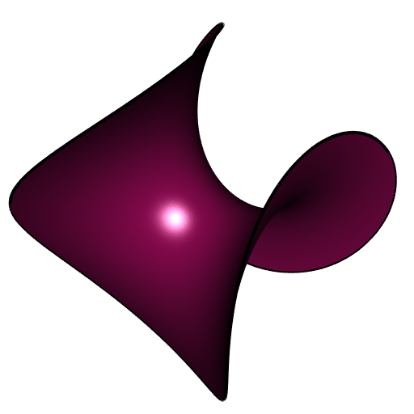
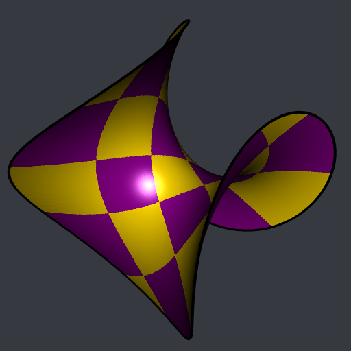
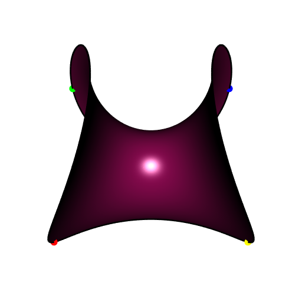
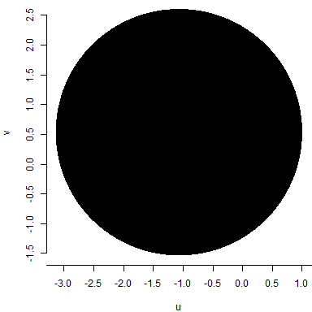
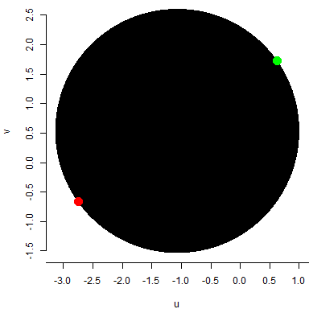
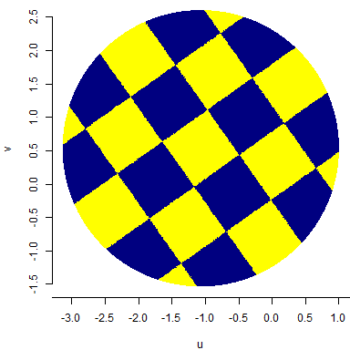

Enneper surface with square checkerboard
In a previous post, I showed how to use the CGAL parameterizations ported to my package cgalMeshes to decorate the Enneper surface of order three with a radial checkerboard.
Here I will show how to map an ordinary, square checkeboard on the Enneper surface of order two.
library(cgalMeshes)
library(rgl)
# Enneper parameterization
n <- 2
Enneper <- function(phi, r) {
rbind(
r*cos(phi) - r^(2*n-1) * cos((2*n-1)*phi) / (2*n-1),
r*sin(phi) + r^(2*n-1)*sin((2*n-1)*phi) / (2*n-1),
2*r^n * cos(n*phi) / n
)
}
# make mesh
rmesh <- parametricMesh(
Enneper, urange = c(0, 2*pi), vrange = c(0, 1.2),
periodic = c(TRUE, FALSE), nu = 512L, nv = 128L, clean = TRUE
)
# we extract the boundary; we will plot it multiple times
bndry <- getBoundary3d(rmesh, sorted = TRUE, color = "black")# plot the mesh
open3d(windowRect = 50 + c(0, 0, 512, 512), zoom = 0.8)
shade3d(rmesh, col = "deeppink4")
shade3d(bndry, lwd = 4)
Now we add some vertices to the mesh in order that the lines of the checkerboard that we will make later will be straight enough. We use the isotropic remeshing to do so, which does not change the shape of the mesh.
# convert to CGAL mesh ####
mesh <- cgalMesh$new(rmesh)
# take a look at the edge lengths
edges <- mesh$getEdges()
summary(edges[["length"]])
## Min. 1st Qu. Median Mean 3rd Qu. Max.
## 0.000116 0.009775 0.013299 0.015449 0.020167 0.042375
# add vertices in order that the checkeboard will have smooth lines ####
mesh$isotropicRemeshing(0.008, iterations = 3, relaxSteps = 2)We first compute a DCP parameterization to make a checkerboard.
# compute mesh DCP parameterization ####
UV <- mesh$parameterization(method = "DCP")
# the UV-space is the square [0,1]x[0,1]
# make square checkerboard with 5 squares x 5 squares ####
checkerboard <- ifelse(
(floor(5 * UV[, 1L]) %% 2) == (floor(5 * UV[, 2L]) %% 2),
"gold", "magenta4"
)
# add normals, convert to 'rgl' mesh, and add colors ####
mesh$computeNormals()
rmesh <- mesh$getMesh()
rmesh[["material"]] <- list("color" = checkerboard)# plot ####
open3d(windowRect = 50 + c(0, 0, 512, 512), zoom = 0.8)
bg3d("#363940")
shade3d(rmesh, meshColor = "vertices", polygon_offset = 1)
shade3d(bndry, lwd = 4)
This mapped checkerboard is not very nice: the squares are not “aligned” with the mesh. The goal of the rest of this article is to construct a mapped checkerboard “aligned” with the mesh.
First method: DCP with four fixed corners
The DCP parameterization allows to choose four vertices of the mesh which will be the four corners of the square space of the parameterization (the “UV-space”). We choose the four vertices which attain the extreme values of the \(x\) coordinate:
vs <- mesh$getVertices()
vsx <- vs[, 1L]
oinc <- order(vsx)
odec <- order(vsx, decreasing = TRUE)
vx1 <- oinc[1L]; vx2 <- oinc[2L]
vx3 <- odec[2L]; vx4 <- odec[1L]
# let's visualize these four vertices on the mesh
open3d(windowRect = 50 + c(0, 0, 512, 512))
view3d(0, -25, zoom = 0.8)
shade3d(rmesh, color = "deeppink4", polygon_offset = 1)
shade3d(bndry, lwd = 3)
points3d(rbind(vs[vx1, ]), col = "red", size = 12)
points3d(rbind(vs[vx2, ]), col = "green", size = 12)
points3d(rbind(vs[vx3, ]), col = "blue", size = 12)
points3d(rbind(vs[vx4, ]), col = "yellow", size = 12)
Now let’s compute the DCP parameterization with these given corners, let’s make the checkerboard and let’s plot the result:
# compute the DCP parameterization with the four given corners ####
UV <- mesh$parameterization(method = "DCP", corners = c(vx1, vx2, vx3, vx4))
# make square checkerboard with 5 squares x 5 squares ####
checkerboard <- ifelse(
(floor(5 * UV[, 1L]) %% 2) == (floor(5 * UV[, 2L]) %% 2),
"gold", "magenta4"
)
# add checkerboard colors to the 'rgl' mesh ####
rmesh[["material"]] <- list("color" = checkerboard)
# plot ####
open3d(windowRect = 50 + c(0, 0, 512, 512), zoom = 0.8)
bg3d("#363940")
shade3d(rmesh, meshColor = "vertices", polygon_offset = 1)
shade3d(bndry, lwd = 4)
Now you see what I mean by “aligned”. It is quite better, no?
Second method: ARAP parameterization
The UV-space of the ARAP (As Rigid As Possible) parameterization is not a square nor a circle in general. It looks like a “flattening” of the mesh. For example, I tried to apply it to the half of the tennis ball and the shape of the UV-space looked like a eight.
Let’s try it.
# compute ARAP mesh parameterization ####
# a large value of lambda for a high rigidity
UV <- mesh$parameterization(method = "ARAP", lambda = 1000)No luck, the UV-space is a circle:
plot(UV, asp = 1, pch = ".", xlab = "u", ylab = "v", axes = FALSE)
axis(1, at = seq(-3.5, 1.5, by = 0.5))
axis(2, at = seq(-1.5, 2.5, by = 0.5))
If we draw a checkerboard on this circle with horizontal and vertical lines, then, the checkerboard mapped on the Enneper surface will not be “aligned”. So we need to draw a rotated checkerboard.
We take the two vertices at the “top” of the Ennerper surface: the ones having the highest value of the \(z\) coordinate.
vs <- mesh$getVertices()
vsz <- vs[, 3L]
odec <- order(vsz, decreasing = TRUE)
vz1 <- odec[1L]; vz2 <- odec[2L]These two vertices are on the border of the mesh, therefore their corresponding uv-points are on the border of the UV-space, and they are diametrically opposite on the circle:

We rotate the circle in order to bring these two points to the north and south poles:
uv1 <- UV[vz1, ]
uv2 <- UV[vz2, ]
alpha <- atan2(uv2[1L]-uv1[1L], uv2[2L]-uv1[2L])
#
rotation <- function(alpha, uv) {
t(rbind(
c(cos(alpha), -sin(alpha)),
c(sin(alpha), cos(alpha))
) %*% t(uv))
}
#
UVrot <- rotation(alpha, UV)
Urot <- UVrot[, 1L]
Vrot <- UVrot[, 2L]Now we can do the rotated checkerboard:
Un <- (Urot - min(Urot)) / (max(Urot) - min(Urot))
Vn <- (Vrot - min(Vrot)) / (max(Vrot) - min(Vrot))
checkerboard <- ifelse(
(floor(5 * Un) %% 2) == (floor(5 * Vn) %% 2),
"yellow", "navy"
)Here is the rotated checkerboard:

So now it remains to do the plot of the mesh with the mapped checkerboard:
rmesh[["material"]] <- list("color" = checkerboard)
open3d(windowRect = 50 + c(0, 0, 512, 512), zoom = 0.8)
bg3d("#363940")
shade3d(rmesh, meshColor = "vertices", polygon_offset = 1)
shade3d(bndry, lwd = 4)
Perfectly “aligned” and symmetric.
It’s not easy to decide which one is better on this example, the DCP with the four fixed corners or the ARAP?
I applied the same steps for the two halves of the tennis ball, and the decision was clear for this example: ARAP is better, because it minimizes the distortion the squares whereas DCP distorts them into elongated rectangles.